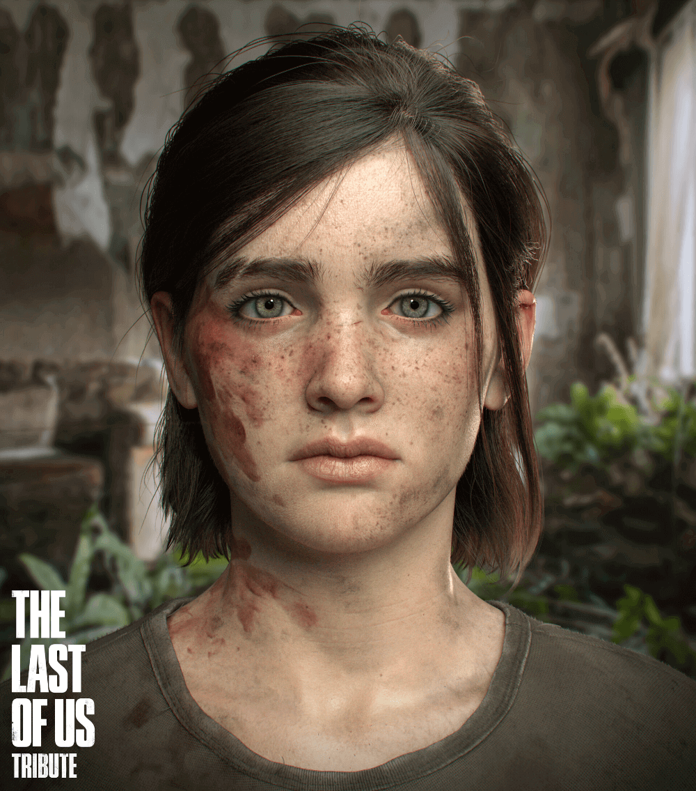
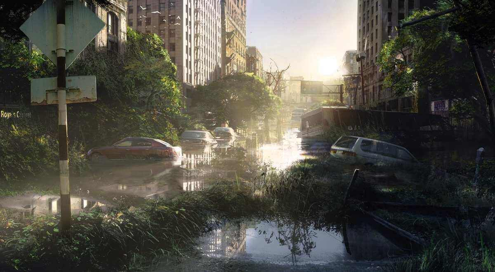
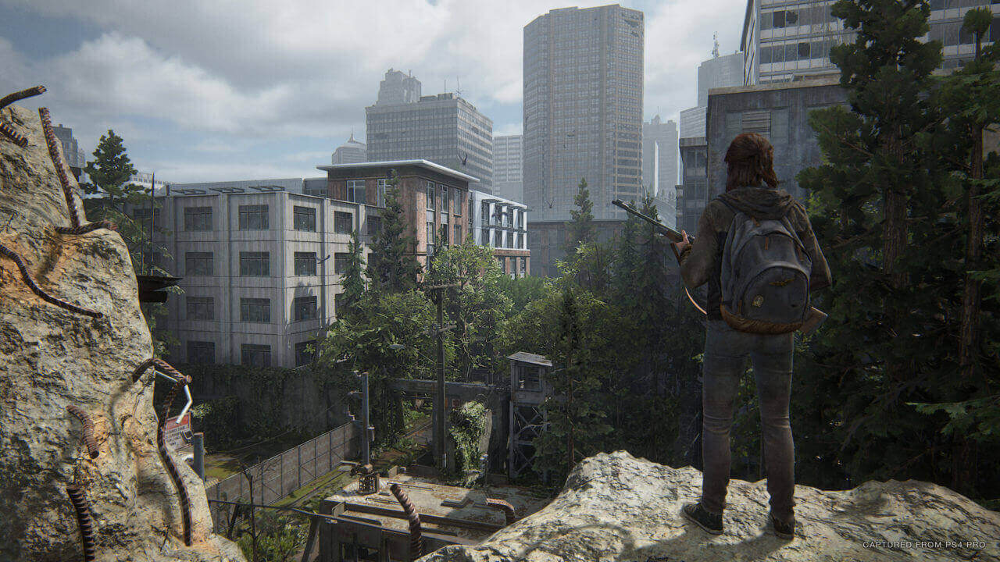
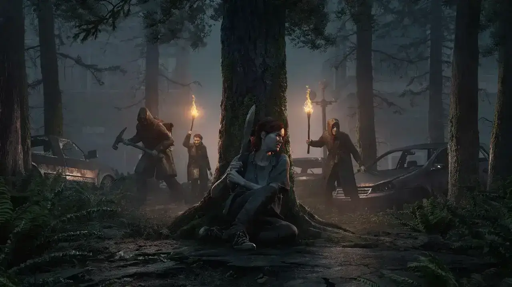
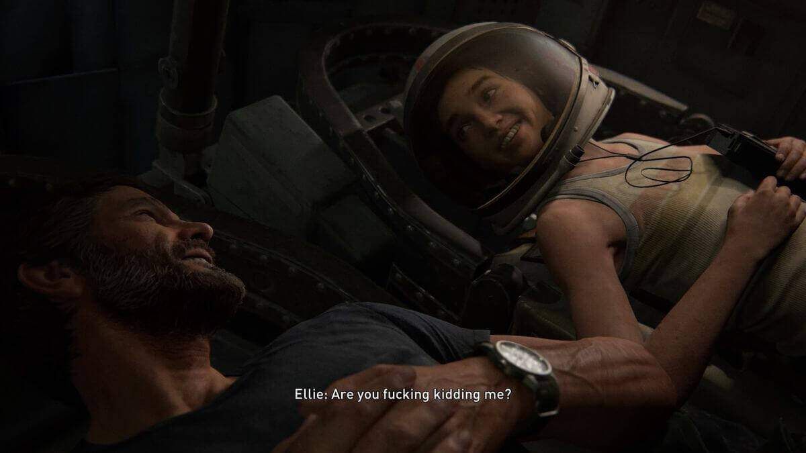

The Last of Us Parte II

Aviso: Este juego se escuentra solo en la versión PlayStation
En 2013 Naughty Dog marcó un hito en la historia de los videojuegos, presentando un título que parecía una serie de televisión cuando esta modalidad apenas comenzaba y ahora, siete años después, tenemos la secuela.
Trailer
Ellie es la protagonista de esta entrega y como tal, vemos una evolución en su personalidad bastante evidente. Pasó de ser una niña extremadamente tierna a una mujer despiadada, capaz de asesinar sin remordimientos porque sabe que es morir o matar. Esto demuestra, una vez más, que el desarrollador no se toma a la ligera a sus personajes. Sabe que son los puntos centrales de sus guiones.
Ya que empezamos por la narrativa, hay que aclamar la historia que Neil Druckmann y su equipo presentan. Se trata de una secuencia de hechos que te harán llorar, enojarte, sentir felicidad y desesperanza; pero lo más importante, demostrará que como en la vida real, no hay buenos ni malos; únicamente víctimas de las circunstancias.
Gráficos Post-Apocalípticos
Otra cosa que distingue a Naughty Dog es su gran diseño de gráficos. The Last of Us Part II presenta visuales dignos de una película de acción ubicada en Seattle (locación de esta nueva aventura). Las texturas de la tela, la piel, el pelo e incluso la sangre, tripas y otras asquerosidades, son fidedignas.
Hay otros detalles que dejan ver que el equipo de producción no deja escapar nada (y si es así, es poco notorio). Por ejemplo, al cabalgar o pisar la nieve, esta levanta la pequeña bruma que se ve en la vida real y los rastros de todos los que pasaron por la misma zona, siguen ahí y están presentes en un tamaño y forma verosímil.

A esto hay que añadirle el manejo de luces. Al tratarse de un juego post-apocalíptico (en donde todo es anarquía, caos y guerra entre facciones), hay una tonalidad primordialmente oscura, que se combina ocasionalmente con paisajes iluminados. Además, los días en el juego transcurren y puedes notarlo por la forma en que el Sol comienza a moverse y proyectar sombras en los edificios y calles. Podría parecer algo insignificante, pero lo cierto es que proporciona realismo al título.
Las luces también son algo de suma importancia en lugares oscuros y si que hay muchos. Un buen juego de terror es aquel que representa la ausencia de luz de una forma que el usuario realmente tenga miedo de seguir avanzando y aunque TLOU2 no es parte de este género en sí, tiene bastantes elementos de ello. Estas áreas son totalmente disfrutables y prometen un buen susto, sobre todo porque tu fuente de luz por lo general es una sola, es unidireccional y en realidad, no sabes qué te espera en la esquina.

Después de la historia, este es el principal atractivo del juego, y es que el estudio se encargó de que realmente nos sintieramos en un ambiente de constante peligro. Al momento de tener que limpiar zonas, los NPCs tienen patrones de movimiento difíciles de predecir y cuando crees que los dominaste, te das cuenta que estabas equivocada, teniendo que improvisar en ese momento o morir e intentarlo de nuevo.
Algo importante de puntualizar esque este juego no tiene cortes de cámara entre gameplay y cinemática, haciendo que todo sea más fluido y parezca, en efecto, una película de acción.
Niveles Más Grandes y Complicados
Si bien estamos frente a un juego que presenta una historia lineal, ahora tenemos niveles más grandes que tienen al menos dos opciones distintas para continuar por tu camino.
A diferencia de su predecesor, este título presenta niveles y escenarios más grandes. Esto da una mayor sensación de exploración ya que podrás elegir entre entrar por una ventana, continuar por el camino lleno de enemigos o intentar encontrar provisiones en una tienda abandonada.
De igual manera, este diseño tiene un efecto en la forma en que resolvemos los acertijos ya que implica más movimientos y exploración en estas grandes áreas; lo cual hace que tardemos y sean más complicados de solucionar. Esto se siente como un buen giro para renovar la vieja fórmula de puzzles.

Más y Mortales Enemigos
The Last of Us se encargó de presentarnos a los infectados y algunas derivaciones de estos, ahora no sólo hay que hacerles frente a estos monstruos y sus evoluciones más letales. También nos enfrentamos a facciones de humanos formadas por causas que podrían parecernos crueles, pero lo cierto es que lo único que buscan hacer es sobrevivir.
Por supuesto, este grupo es el peor y no sólo porque Naughty Dog se encargó de retratarlo como tal (a fin de cuentas, su motivo es una pasión, un impulso, los otros matan porque sí), sino debido a que cada agrupación se maneja de forma diferente y tiene tácticas distintas que te harán replantearte todos los conocimientos que hayas adquirido en el camino.

TLOU2 está basado principalmente en el sigilo. Esto denota dos cosas, por un lado la forma en que Ellie se ha convertido en una guerrera y por el otro, le da ese tono táctico que tanto distingue a la franquicia; en el cual tenes que sobrevivir en situaciones precarias y con pocos recursos, cosa que lo hace sumamente atractivo.
Al igual que en la primera entrega, hay un acompañante a lo largo de tu aventura y esta es la parte que Naughty Dog debió mejorar un poco más (me encontré algunos glitchs pero nada que realmente arruiné la experiencia). Ese NPC si bien es un apoyo para continuar por los distintos niveles, en las batallas, aunque te ayuda, pierde toda la verosimilitud cuando pasa frente a los enemigos y estos no lo detectan.
Anotaciones Finales
Durante E3 2018, Neil Druckmann reveló que Ellie no es el único personaje jugable en The Last of Us Part II. Obvio esto es cierto, pero la forma en que se maneja es una sorpresa que más de un usuario disfrutará.
Por otro lado, el gameplay también te conecta de una forma muy humana con la historia del juego. No todo es luchar, pelear, esconderte y disparar; también hay momentos hermosos que valen la pena vivir.
Finalmente, algo que era evidente de los primeros adelantos pero que es necesario destacar, es la excelente captura de movimiento de los actores. Lo que hace que esto se trate más de una serie interactiva que de un videojuego.

Naughty Dog nos entrega una secuela digna de una de sus franquicias más representantivas. Proporcionando un giro fresco a las mecánicas clásicas, más opciones para resolver los acertijos y por supuesto una Ellie mucho más madura que refleja la evolución de la saga.
The Last Of Us Part II solo se encuentra disponible en las tiendas de PlayStation